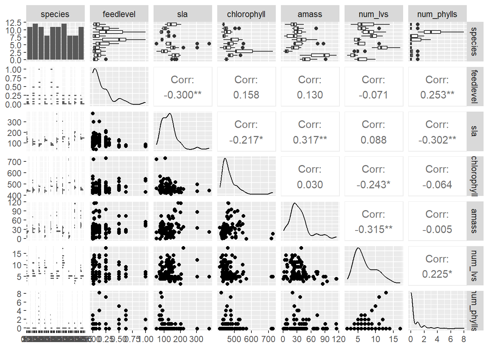

Attaching package: 'flextable'
The following object is masked from 'package:purrr':
compose
library(car)
Loading required package: carData
Attaching package: 'car'
The following object is masked from 'package:dplyr':
recode
The following object is masked from 'package:purrr':
some
library(broom)library(corrplot)
corrplot 0.92 loaded
library(AICcmodavg)library(GGally)
Registered S3 method overwritten by 'GGally':
method from
+.gg ggplot2
# would be nice to havelibrary(MuMIn)
Attaching package: 'MuMIn'
The following objects are masked from 'package:AICcmodavg':
AICc, DIC, importance
#library(equatiomatic)library(corrplot)
plant <-read_csv(here("data", "hf109-01-sarracenia.csv")) %>%# make the column names cleanerclean_names() %>%# selecting the columns of interestselect(totmass, species, feedlevel, sla, chlorophyll, amass, num_lvs, num_phylls)
Rows: 120 Columns: 32
── Column specification ────────────────────────────────────────────────────────
Delimiter: ","
chr (1): species
dbl (31): feedlevel, plant.num, fv.fm.lf1, fv.fm.lf2, totmass, rt.sht, mass....
ℹ Use `spec()` to retrieve the full column specification for this data.
ℹ Specify the column types or set `show_col_types = FALSE` to quiet this message.
# calculate pearson's r for numerical values onlyplant_cor <- plant_subset %>%select(feedlevel:num_phylls) %>%cor(method ="pearson")# creating a correlation plotcorrplot(plant_cor,# change the shape of what's in the cellsmethod ="ellipse",addCoef.col ="black" )
Create a plot of each variable compared against others
`stat_bin()` using `bins = 30`. Pick better value with `binwidth`.
`stat_bin()` using `bins = 30`. Pick better value with `binwidth`.
`stat_bin()` using `bins = 30`. Pick better value with `binwidth`.
`stat_bin()` using `bins = 30`. Pick better value with `binwidth`.
`stat_bin()` using `bins = 30`. Pick better value with `binwidth`.
`stat_bin()` using `bins = 30`. Pick better value with `binwidth`.

Starting regression here:
(ex) to determine how species and physiological characteristics predict biomass, we fit multiple linear models
# making a null model, which is represented by a one and we only want it from the plant_subset datasetnull <-lm(totmass ~1, data = plant_subset)# now we include all of the variablesfull <-lm(totmass ~ species + feedlevel + sla + chlorophyll + amass + num_lvs + num_phylls, data = plant_subset)
We visually asses normality and homoscedasticity of residuals using diagnostic plots for the full model
par(mfrow =c(2,2))plot(full)
Homeoscedasticity: red line is flat, a little bit cone shaped as in it is clumped at the beginning, it is borderline homeoscedastic.
Shapiro-Wilk test: null hypothesis- variable of interest are normally distributed
Breush-Pagan test: null hypothesis- variable of interest has constant variance
check_normality(full)
Warning: Non-normality of residuals detected (p < .001).
table <-tidy(full_log, conf.int =TRUE) %>%# change the p-value numbers if they're really small using mutate# change the estimates, st err, and t-stats to round to ___ digits# mutate() %>% # make it into a flextableflextable() %>%# fit it to the viewerautofit()table